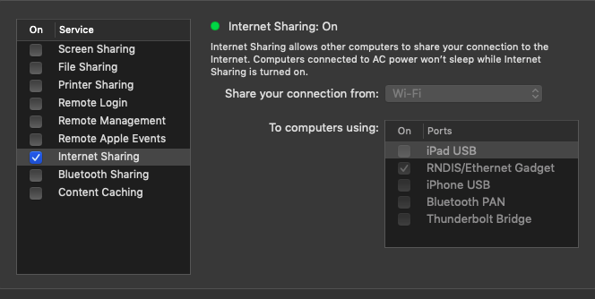

25 June 2019
This post is about how to setup your Raspberry Pi in a headless configuration, so you can plug it in to your main computer and SSH into it. I will be using macOS Mojave 10.14.4 and a Raspberry Pi Zero W, but most of this should work on any *nix system and any relatively new Raspberry Pi.
You will first download the image file for Raspbian, and then burn it into an SD card (minimum of 8 GB should be fine) which your Raspberry Pi will boot from.
Here is the download page for Raspbian OS,
since this is a headless setup, you will install the Lite
version: which is lightweight and does not have a desktop included.
After downloading the .zip file, extract it to a
.img and burn this disk image to the SD card using balenaEtcher. You can
use dd if you want, but I have found Etcher to be
faster and more reliable.
After the burning process is complete, take out the SD card and plug
it again. You will see a partition named boot show up: we
are going to edit some files here to enable SSH and the ability to share
your computer’s internet connection with the Raspberry Pi.
On a terminal, cd into this partition.
First create an empty file named ssh via
touch ssh.
After this, open the file named config.txt and at
the end of this file append the parameter
dtoverlay=dwc2.
Finally, open the file named cmdline.txt, and after
parameter rootwait, add
modules-load=dwc2,g_ether. Be careful with the spaces: the
parameter modules-load=dwc2,g_ether must have spaces at the
beginning and the end, separating it from other parameters, but should
contain no spaces itself.
Now on your Macbook, go to
System Preferences > Sharing, enable the tick of
Internet Sharing. When you connect your Pi, check the tick
on RNDIS/Ethernet Gadget. It should look something like
this:

Now that we have enabled SSH, you can plug in the SD card to your
Raspberry Pi, and connect it via USB. You can then SSH into it by
ssh pi@raspberrypi.local with password
raspberry. Once you are logged in you can:
sudo passwd root to change the root user password./etc/ssh/sshd_config and change
PermitRootLogin to yes.After this, reboot the machine by sudo reboot. Give it a
few seconds to boot-up, and then SSH into the root user by
ssh root@raspberrypi.local, entering the password you had
set.
Now that you have root access, you can add/remove users easily.
pi and its home directory
by userdel -r pi.useradd -m NEW_USER to create a new user with
home directory replacing NEW_USER.passwd NEW_USER to set a password for the
user.sh shell. We want to change this to bash by
usermod --shell /bin/bash NEW_USERsudoers list by
adduser NEW_USER sudoThe default device name is raspberrypi, which can cause
confusion if there are multiple Pi’s at play. To change this,
(preferably while still logged in to the root user):
hostname NEW_HOSTNAME to change the
hostname./etc/hostname and /etc/hosts to reflect this
change. Simply replace every raspberrypi with
NEW_HOSTNAME.Since you will presumably be SSH’ing into your Pi from the same computer all the time, it becomes cumbersome after a while to enter the password. To go around this, we will create a public/private RSA keypair which will allow us to authenticate our computer to the Pi without entering the password each time.
On your computer, and with the Pi connected, run
ssh-keygen to generate this pair (the default path for the
generated file is ~/.ssh/id_rsa, which works just
fine).
To copy this pair to your Pi, enter
ssh-copy-id -i NEW_USER@NEW_HOSTNAME.local for the regular
user and ssh-copy-id -i root@NEW_HOSTNAME.local again for
the root user.
Now, you can SSH into the Pi from your computer anytime without entering the user passwords.
\space